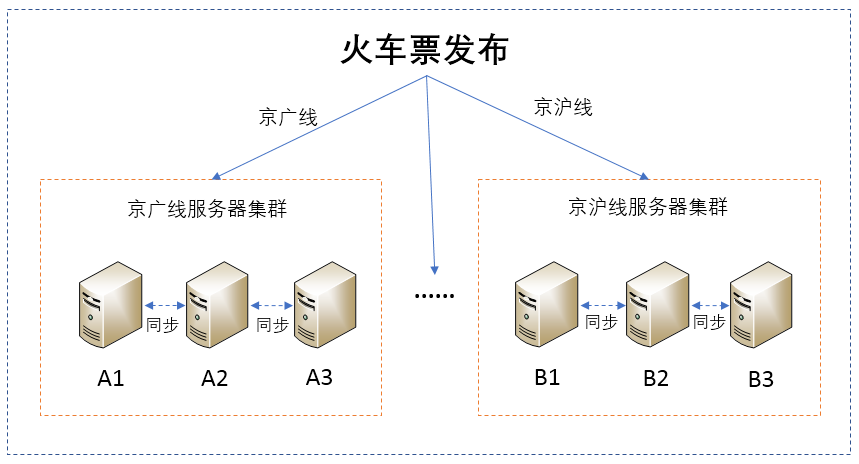
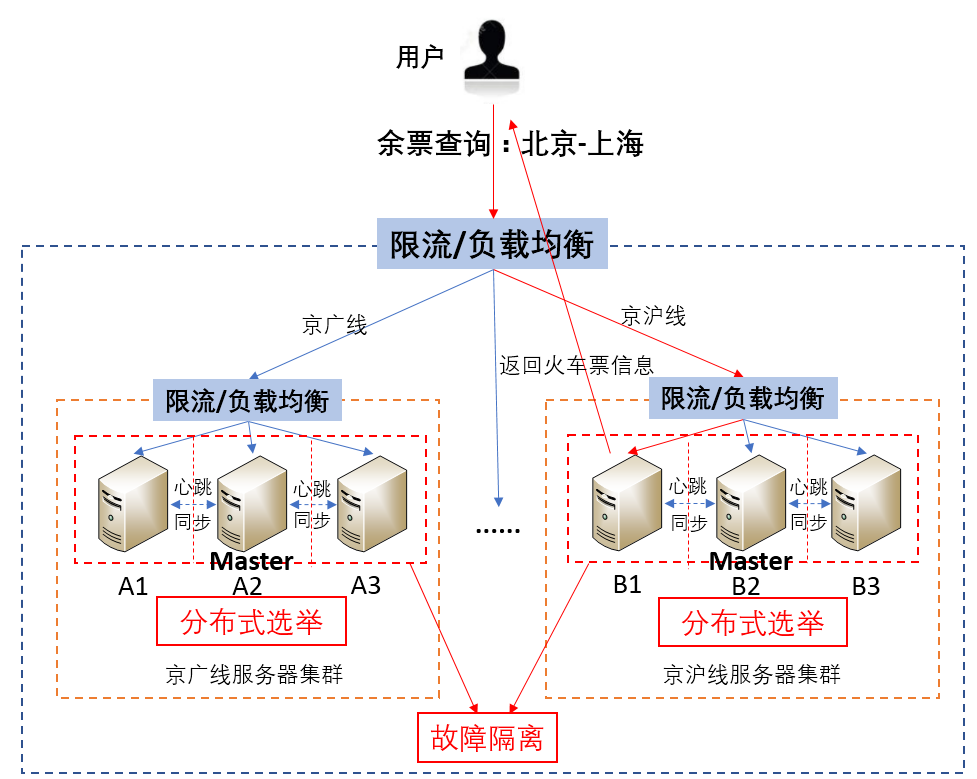
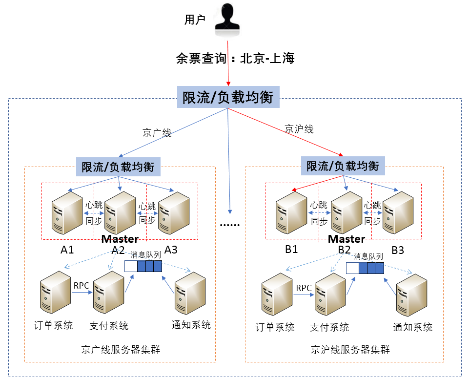
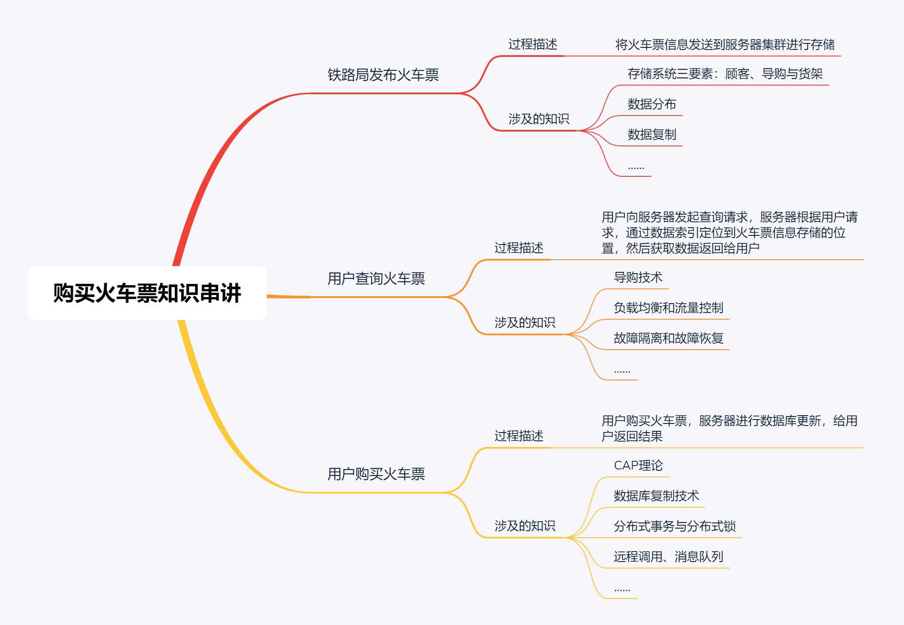

- 00 开篇词 四纵四横，带你透彻理解分布式技术.md.html
- 01 分布式缘何而起：从单兵，到游击队，到集团军.md.html
- 02 分布式系统的指标：啥是分布式的三围.md.html
- 03 分布式互斥：有你没我，有我没你.md.html
- 04 分布式选举：国不可一日无君.md.html
- 05 分布式共识：存异求同.md.html
- 06 分布式事务：All or nothing.md.html
- 07 分布式锁：关键重地，非请勿入.md.html
- 08 分布式技术是如何引爆人工智能的？.md.html
- 09 分布式体系结构之集中式结构：一人在上，万人在下.md.html
- 10 分布式体系结构之非集中式结构：众生平等.md.html
- 11 分布式调度架构之单体调度：物质文明、精神文明一手抓.md.html
- 12 分布式调度架构之两层调度：物质文明、精神文明两手抓.md.html
- 13 分布式调度架构之共享状态调度：物质文明、精神文明多手协商抓.md.html
- 14 答疑篇：分布式事务与分布式锁相关问题.md.html
- 15 分布式计算模式之MR：一门同流合污的艺术.md.html
- 16 分布式计算模式之Stream：一门背锅的艺术.md.html
- 17 分布式计算模式之Actor：一门甩锅的艺术.md.html
- 18 分布式计算模式之流水线：你方唱罢我登场.md.html
- 19 分布式通信之远程调用：我是你的千里眼.md.html
- 20 分布式通信之发布订阅：送货上门.md.html
- 21 分布式通信之消息队列：货物自取.md.html
- 22 答疑篇：分布式体系架构与分布式计算相关问题.md.html
- 23 CAP理论：这顶帽子我不想要.md.html
- 24 分布式数据存储系统之三要素：顾客、导购与货架.md.html
- 25 数据分布方式之哈希与一致性哈希：“掐指一算”与“掐指两算”的事.md.html
- 26 分布式数据复制技术：分身有术.md.html
- 27 分布式数据之缓存技术：“身手钥钱”随身带.md.html
- 28 分布式高可靠之负载均衡：不患寡，而患不均.md.html
- 29 分布式高可靠之流量控制：大禹治水，在疏不在堵.md.html
- 30 分布式高可用之故障隔离：当断不断，反受其乱.md.html
- 31 分布式高可用之故障恢复：知错能改，善莫大焉.md.html
- 32 答疑篇：如何判断并解决网络分区问题？.md.html
- 33 知识串联：以购买火车票的流程串联分布式核心技术.md.html
- 34 搭建一个分布式实验环境：纸上得来终觉浅，绝知此事要躬行.md.html
- 特别放送 Jackey：寄语天涯客，轻寒底用愁.md.html
- 特别放送 分布式下的一致性杂谈.md.html
- 特别放送 崔新：追根溯源，拨开云雾见青天.md.html
- 特别放送 徐志强：学习这件事儿，不到长城非好汉.md.html
- 特别放送 那些你不能错过的分布式系统论文.md.html
- 结束语 为什么说提升职业竞争力要从尊重、诚实开始？.md.html
- 捐赠
33 知识串联：以购买火车票的流程串联分布式核心技术
你好，我是聂鹏程。今天，我来继续带你打卡分布式核心技术。
还记得在专栏之初，我和你分享的“分布式四纵四横知识体系”吗？截止到目前，我已经带你学习了四横和三纵，包括分布式计算、分布式存储与管理、分布式通信、分布式资源池化、分布式协同、分布式调度和分布式追踪与高可用的关键技术（由于分布式追踪、分布式部署虽属于支撑技术，但并不会影响业务的构成，因此我没有在专栏中展开）。
但学以致用才是最终目的，所以在接下来的模块中，我将通过两篇总结性质的文章，为你串联起前面讲到的核心知识点，看看它们在业务中是如何应用的。
今天，我就先以购买火车票的流程，带你串联下整个专栏涉及的分布式核心技术吧。
首先，为方便你理解，并抓住其中涉及的核心技术，我对购买火车票的流程做了一个简化，大致划分为三大核心步骤：
- 首先，铁路局向购票系统发布火车票；
- 然后，用户通过系统查询火车票，找到需要的火车票后购买；
- 最后，购票系统给用户响应，完成购票。
这个流程看似简单，但涉及了我们之前讲过的很多知识。
这里，我有个小建议，在学习后面的内容前，你可以先自己思考下这个过程涉及了哪些知识点，然后再与我接下来的讲述进行对比，以验证自己对之前内容的掌握程度。这样一来，你可以加深对已掌握知识的理解深度，也可以查漏补缺进而有针对性地复习其他内容。
那么接下来，我就主要分为三部分进行讲解：铁路局发布火车票、用户查询火车票，以及用户购买火车票。
铁路局发布火车票
铁路局发布火车票的过程，主要涉及分布式数据存储这一站的知识，包括存储系统三要素、数据分布和数据复制等技术。
铁路局向购票系统发布火车票的过程，主要是将火车票信息发送到服务器集群进行存储，需要用到存储系统三要素的相关技术。其中，铁路局就是存储系统三要素中的“顾客”，火车票存储到具体哪个服务器需要构建数据索引，也就是我们说的三要素中的“导购”，而存储数据的服务器就是三要素中的“货架”。
由于涉及多个服务器存储火车票信息，不可避免地需要考虑服务器之间数据存储的均衡，以及快速确定火车票信息存储位置以方便后续查询和购买火车票。因此，这里需要用到分布式存储中的数据分布技术。
铁路局按照火车线路将火车票发布到不同的服务器上，即在数据分片技术中提到的按照数据范围进行分片。比如，京广线的车票信息存储在京广线服务器集群、京沪线的车票信息存储在京沪线服务器集群等。
除此之外，为了保证可靠性，也就是当一台服务器故障后，该服务器存储的火车票信息可以恢复或不丢失，通常会进行数据备份。也就是说，同一份数据可能会有多台服务器一起存储，比如京广线的火车票数据存储到服务器A1、A2和A3上，京沪线的火车票数据存储在服务器B1、B2和B3上。
而数据备份，用到的就是分布式存储中的数据复制技术。由于同一份数据被多台服务器存储，自然就需要保证数据的一致性。关于数据一致性，你可以参考CAP理论这篇文章。

接下来，我们再看看用户查询火车票过程中涉及了哪些相关技术吧。
用户查询火车票
对于用户查询火车票来说，大致过程是用户向服务器发起查询请求，服务器根据用户请求，通过数据索引，也就是导购技术，定位到火车票信息存储的位置，然后获取数据返回给用户。
从这个流程可以看出，服务器接收用户查询请求是第一步。
正常情况下，用户并发请求量比较小，很少会出现服务器能力有限导致系统崩溃的情况。但，遇到节假日或春节，用户请求量通常会非常大，这时如果不采取一定策略的话，大概率会因为服务器能力受限导致系统崩溃。
而这里的策略，通常就是保证分布式高可靠的负载均衡和流量控制。比如，每年春运，火车票发布的瞬间，就有大量的用户抢票，如果购票系统后台不使用负载均衡和流量控制的话，服务器一下子就被击垮了。
除此之外，服务器还不可避免地会出现一些小故障，比如磁盘损坏、网络故障等问题。如何检测服务器故障，以及如何进行故障恢复，就需要用到分布式高可用的故障隔离与故障恢复的相关技术了。
接收用户请求后，接下来需要将请求转发至相应的服务器集群，然后再从中选择某一台服务器处理用户请求，也就是获取数据并返回给用户。本质上，这就是在进行数据索引，设计分布式数据存储中的数据分布方式的相关技术。
以用户查询从北京到上海的火车票信息为例，查询流程如下：
- 首先，根据查询条件，系统将请求转发至存储京沪线火车票信息的服务器集群中；
- 然后，服务器集群再使用一次负载均衡，比如使用轮询算法， 将请求转发至某一台服务器；
- 最后，这台服务器将火车票的车次、余票等信息返回给用户。

在这个过程中，还可以使用限流算法，比如漏桶、令牌桶等策略来限制用户流量，保证系统高可用。
除此之外，在存储火车票信息的服务器中，各个服务器的服务单独运行，也就相当于做了一定的故障隔离，比如图中的服务器A1~A3、B1~B3。
当然，这里还需要注意一个问题。在上面的过程中，我一直提到的是服务器集群。既然是集群，就会涉及集群架构、分布式选主等策略。
以集中式架构Master/Slave为例，服务器集群中会通过分布式选举算法选出一个Master，Master和其他服务器节点之间会维持心跳，并通过心跳来感知服务器节点的存活状态。比如，京广线服务器集群选出的Master节点为A2，A2与A1和A3之间一直维持心跳。
具体的集群架构原理，你可以参考“第二站：分布式资源管理与负载调度”；而分布式选主的原理，你可以再回顾“第一站：分布式协同与同步”的相关内容。
当集群中Master节点故障后，会从其他节点中重新选举出一个Master节点，继续为用户提供服务，也就是备升主，以保证服务的可用性。这里，备升主就是一种故障恢复策略。
最后，我们再来分析下用户购买火车票的过程。
用户购买火车票
用户购买火车票的过程与用户查询火车票的过程非常相似，唯一不同的是会造成数据库的变化。换句话说，用户查询火车票是读请求，而购买火车票相当于一个写请求。那么，写请求又会造成什么新问题呢？
写请求与读请求的区别是，写请求会造成数据的变化，因此相对于查询火车票，购买火车票的过程涉及的技术问题会多一些，但多出的无非就是数据的一致性问题。谈到数据的一致性，我们就会想到CAP理论、数据复制技术、分布式事务、分布式锁等。其实，不仅仅是购买火车票，任何一个简单的购买操作或写操作中，都会涉及这些分布式知识。
本质上讲，每次购买火车票的操作，就是一个分布式事务，要么执行成功要么执行失败。
当用户购买了火车票时，该火车票对应时间的车次余票数量必须相应减1，如果减少时发现原先票数就已经为0了，此时就应该提醒用户购买火车票失败，余票为0；同样的，如果票数不为0，则票数应该相应减1，并提示用户购票成功。
不难看出，购买火车票会改变火车票数据，也不可避免地会存在多个用户同时购买相同路线、相同车次（比如京沪线的T12）的场景。也就是说，这个购买过程存在多个进程同时访问共享资源的问题，因此还要用到分布式锁的相关技术。
另外，用户购买火车票的过程还会涉及用户体验、数据一致性和网络故障等问题，因此还涉及C、A、P策略的选择问题。
在铁路局发布火车票的流程中，为了保证可靠性，同一数据通常会备份到多个服务器上。当用户购买火车票导致火车票数据改变时，主节点上的数据必须与备节点上的数据保持一致，以防止主节点故障后，备升主，但数据不一致导致业务出错的情况。
比如，用户A购买2019年10月12日北京到上海的T12的火车票，已购买成功，座位号为3车厢23B。假设主节点和备节点之间数据不一致，主节点上已经减去该火车票，但未在备节点上减去。此时，若主节点故障，备节点升主，用户B此时申请购买相同火车票，系统将3车厢23B火车票又卖给了用户B。等到乘车时，用户A和B就难免“打架”了。
当然，通常因为网络故障或节点故障等原因导致主节点不能正常工作，才会发生备升主，而备升主其实就是故障恢复策略，而一致性问题涉及的是“第五站：分布式数据存储”的相关技术。
同时，购买火车票的场景需要快速响应用户，以保证用户体验。因此，通常优先保证系统的可用性，稍微降低对数据一致性的要求，但也必须保证最终一致性。这就是我们平常遇到的，查询火车票时还有余票，但下单后却提示余票为0，无法购买。
导致这个结果的原因是，下单前你访问的数据库中，数据还未同步，显示有余票；而下单后，数据实现同步了，发现余票数量已经为0，因此提示你无法购买该火车票。
实现上述策略的方法，通常会采用半同步复制技术，即将修改后的数据同步到多个备数据库中的某一个或几个后立即响应用户，而不用将数据同步到所有备数据库。
除此之外，业务量很大的情况下，为了让服务更加健壮、低耦合、便于管理，会根据功能拆分为不同的服务。比如，将整个购票系统拆分为订单系统、支付系统和通知系统，而当购票系统拆分为3个子系统后，子系统之间不可避免地存在信息的交互，子系统之间的交互就会涉及分布式通信的相关知识，比如远程调用RPC、消息队列等。
如图所示，用户购买火车票后，会首先在订单系统下单，下单成功后会调用支付系统的支付操作进行支付，之后将支付成功的消息存放到消息队列中，通知系统到消息队列中获取消息，最后通知用户购买成功。

总结
今天，我主要以购买火车票为例，为你串联了分布式技术在实践中的应用。
为方便理解，我将购买火车票的模型简化为三个核心步骤，即铁路局发布火车票、用户查询火车票和用户购买火车票。
其次，我分别与你分析了这三个核心步骤涉及的关键的分布式技术。
对于铁路局发布火车票这个流程来说，铁路局是数据的生产者，需要将数据发布到服务器进行存储，主要涉及的是分布式数据存储相关技术，对应专栏“第五站：分布式数据存储”的内容。
对于用户查询火车票来说，主要是读请求，涉及负载均衡、流量控制、集群管理及选主等技术，对应专栏“第一站：分布式协调与同步”“第二站：分布式资源管理与负载调度”和“第六站：分布式高可靠”的内容。
而对于用户购买火车票来说，是写请求，涉及数据的改变，因此除了用户查询火车票涉及的技术外，还额外涉及一致性、分布式事务、远程通信等技术，对应专栏“第一站：分布式协调与同步”、“第四站：分布式通信技术”、“第五站：分布式数据存储”和第六站:“分布式高可用”等内容。
最后，我再通过一张思维导图来归纳一下今天的核心知识点吧。

思考题
结合购买火车票这个案例，你能和我分享你身边的应用场景或系统，都涉及或采用了哪些分布式技术吗？
我是聂鹏程，感谢你的收听，欢迎你在评论区给我留言分享你的观点，也欢迎你把这篇文章分享给更多的朋友一起阅读。我们下期再会！
© 2019 - 2023 Liangliang Lee. Powered by gin and hexo-theme-book.